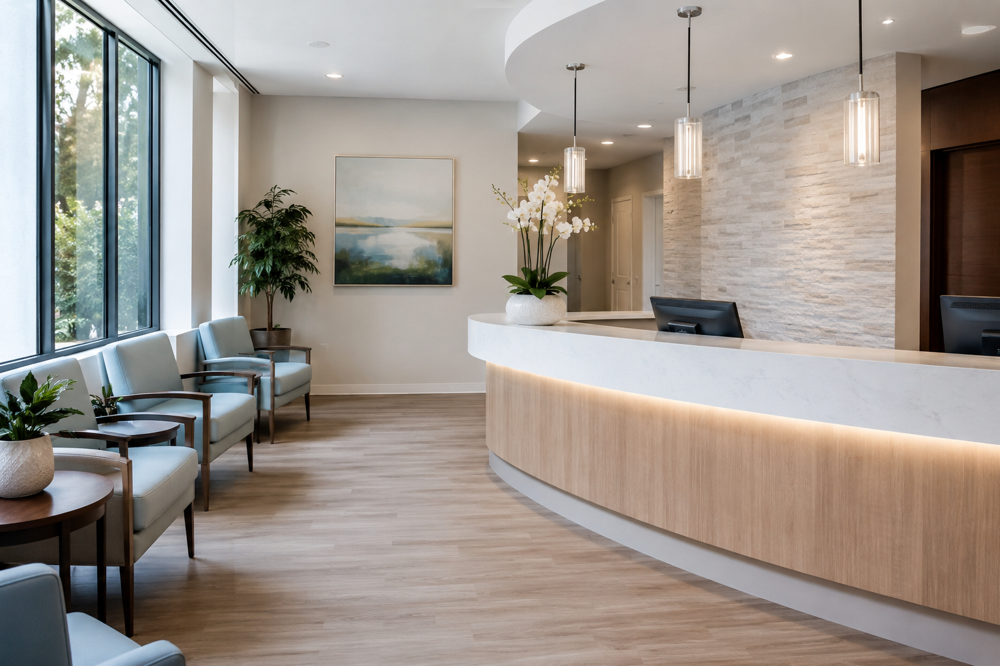
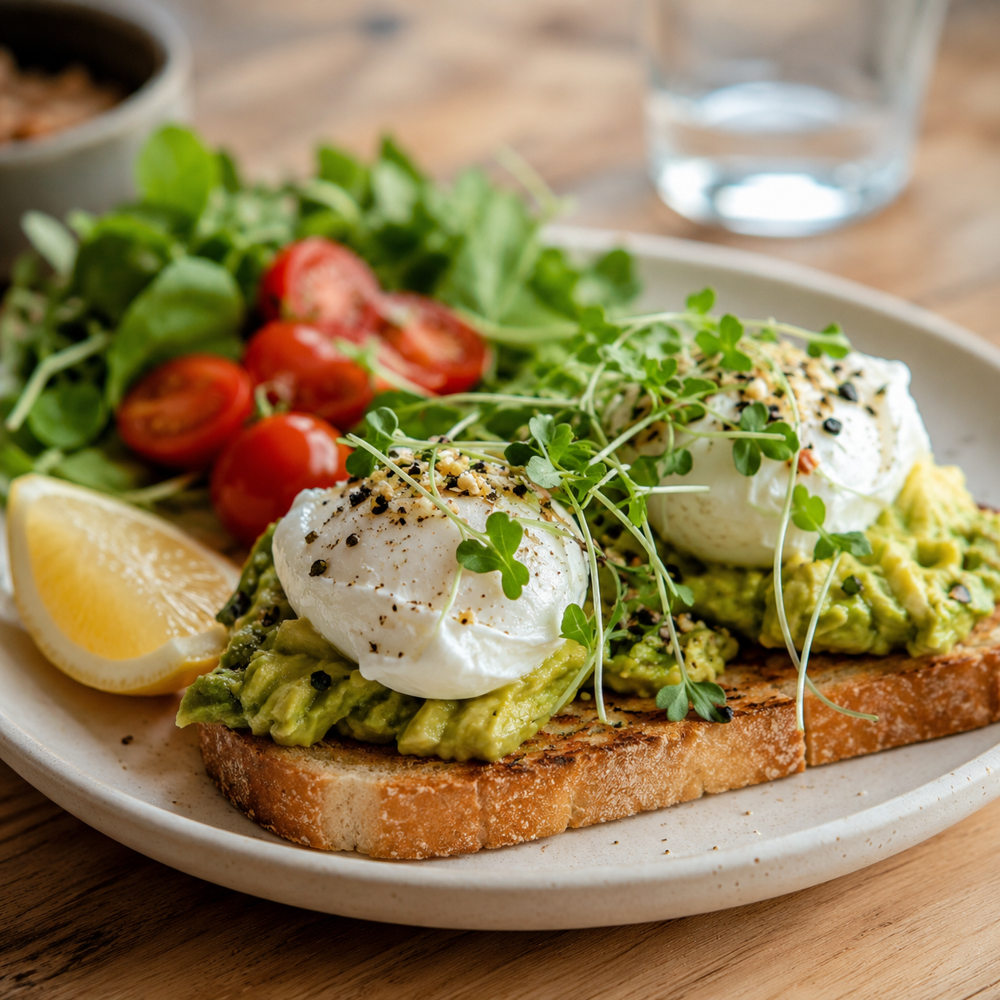
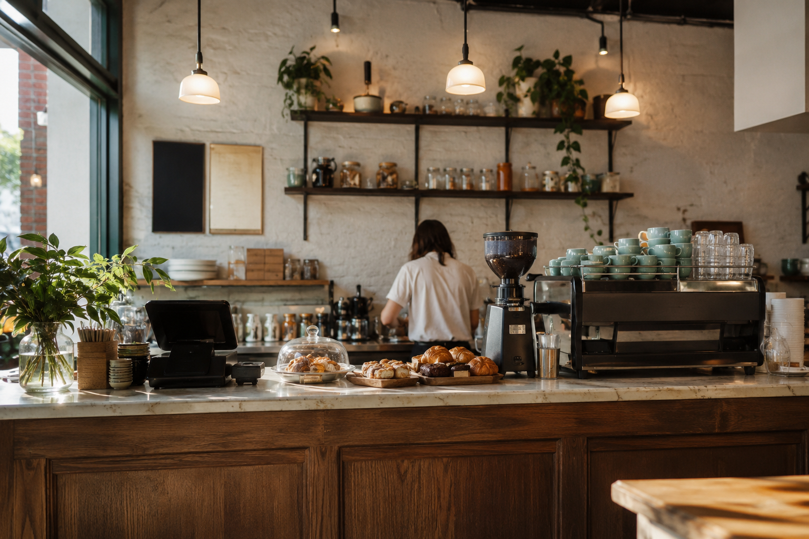

Beauty
Maison Liora
Luxury salon experience with booking flow, service cards, gallery, and FAQ concierge.
View CaseA curated showcase of polished one-page experiences for beauty, healthcare, and hospitality brands. Each concept combines editorial visuals, conversion-focused structure, and interactive lead capture.



Each showcase includes premium imagery, animated headings, interactive galleries, lead forms, and guided FAQ assistants.
Luxury salon experience with booking flow, service cards, gallery, and FAQ concierge.
View CaseCalm clinic experience with patient request flow, care cards, facility tour, and FAQ assistant.
View Case
Restaurant/cafe experience with menu highlights, reservation inquiry, catering angle, and gallery.
View CasePremium websites can feel alive without becoming heavy. This section shows the interaction layer I can bring to landing pages, product pages, dashboards, mobile-style flows, and modern service websites.
High-end landing pages with cinematic sections, lead capture, sticky conversion paths, FAQ logic, and polished mobile behavior.
Distinct art direction, refined spacing, high-contrast hierarchy, rich image treatment, and responsive layouts that feel custom.
Scroll reveals, cursor-aware highlights, smooth tab transitions, gallery motion, button feedback, and reduced-motion support.
Smart forms, FAQ widgets, booking paths, filters, status messages, and simple automation-ready handoff flows.
Clickable sections, realistic content states, mobile-first checks, and polished flows that help a buyer understand the final website fast.
The showcase is built around practical business outcomes: sharper presentation, easier decision-making, and cleaner inquiry capture.
Shape the page around the brand's atmosphere, offer, and ideal visitor.
Use strong imagery, service sections, reviews, and visual proof to build trust.
Make booking, calling, messaging, and form submission feel natural.
Route inquiries into simple handoff flows that a small team can manage.
Every concept includes a focused first impression, polished content sections, mobile-friendly layout, contact handoff, and interaction details that make the brand feel considered.